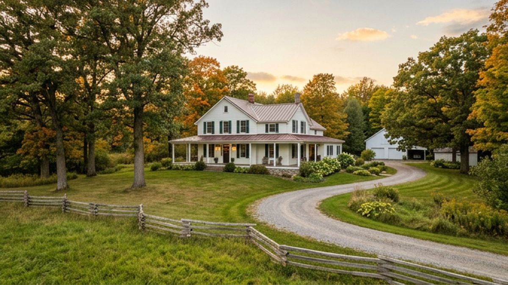

Guide No. 1
The Survival Guide to Buying Vacant Land in Simcoe County
Buying vacant land looks simple from the road and gets complicated the day you own it. This 14-page guide walks through what to check before you offer: soil and test holes, wells and septic systems, site servicing, grading and drainage (swales and soak-away pits), realistic construction costs, how to vet a builder, and how lenders treat land financing.
Written by Jonathan Wallace with input from Steve Feheley of Jameson Homes, a custom builder working across Simcoe County, so the advice reflects what actually happens on local builds.
Get the guide free
Sign up once and the download unlocks, plus you get the five-minute Friday email on the Georgian Bay market. Unsubscribe anytime.
Your guide is ready.
Watch for the Market Read this Friday. Here is the download:
Download the Vacant Land Guide (PDF)